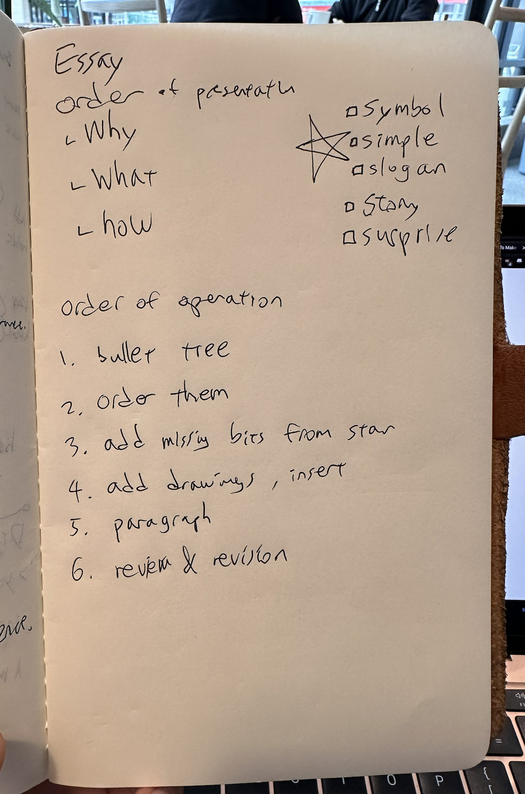
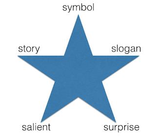

Blog Post Formula
You can only start writing when you stop worrying about writing
Since I stopped working full-time at my last software job, I’ve been writing more than usual. Writing is a way to think, and I feel great about reflecting on my foundational self.
Talking is also a way to think, and I often talk to my friends about the kinds of problems I face internally. Socializing is a great way to discover topics that I really about. Some of these conversations yield wonderful insights that I want to share with the rest of the world. But if I were to just paste in the chat logs, it would be missing context and encoded in lingo only shared by the few.
When I have a neat idea, I don’t want it to just live in my memory – I want it to escape my mind, where it can be shared. But writing is effort. How do I write about it so that it’s easy for others to read? So that it’s easy to write? How about you? Do you find writing difficult? I wish that if you are inclined to write about something that you care about, you would without much hesitation.

Just like making wood furniture, a blog post can be as simple as a utilitarian bench or an ornate throne. In either case, the tools and constraints dictate the design and craft of blog posts. So if you struggle with juggling the content of your writing as well as its format, then using a jig to guide your tools will constrain the format dimension. This will allow you to focus on the content.
Order of writing operations
Step 0: Start with Why
When a reader engages with the article, they are not sure if the presented solution is relevant to their problem. Therefore, present the problem first, the solution second, and the implementation last.
Why
What
How
This is the basic skeletal structure to insert your ideas as they arrive to the front of your mind. It constrains my thoughts to the needs of the reader.
Step 1: Dump ideas into the idea tree
 |
|---|
| Notes in my journal, ready to get allocated into the idea tree |
Once I put those three words down in my text editor, I fill in the blanks. It forms a tree. For this article, it looked something like this:
Why
i want people to write about their ideas
i want to make writing easier
when writing, focus should be on ideas, not format
What
start with why
why / what / how
winston star
simple / slogan / symbol / surprise / story
order of operations step by step
How
start with template
flesh out template
check the boxes
review/revise
Now that I laid out my ideas in order, I can clear out my short-term memory of those points, and work from top to down, turning them into paragraphs. I work with Markdown, so this is when I name one section at a time. I don’t worry so much about readability, just that all the ideas I want to present are in order.
Step 2: Turn ideas into paragraphs
This post is a continuation of how the points were turned into paragraphs. It’s amazing how fast I can put the sentences together if I don’t have to think about anything else. This step only took me about one focused hour. The other steps took another hour.
Step 3: Check the 5 Winston Star boxes
To make the idea easy to read and remember, I make sure to check all 5 boxes in the Winston star.

This is when I add pictures and diagrams via Excalidraw to help anchor the message to make it easy to remember.
Step 4: Review & Revise
I read and re-write parts that don’t contribute to the whole. This sometimes involves a fresh set of eyes, but a blog post doesn’t require the professional editorial attention that a real book would need.
I hope that this writing formula and process helps you overcome your barrier for writing. Writing is a great way to consolidate your thoughts, and to share them with the world. Send me what you wrote to june[@]june.kim